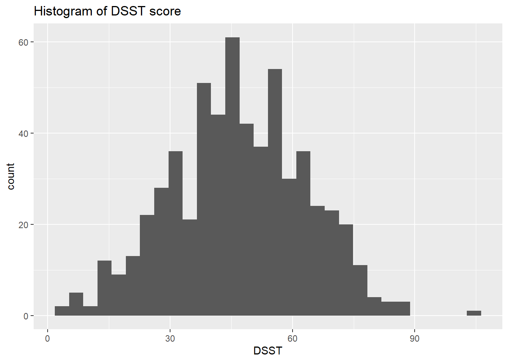
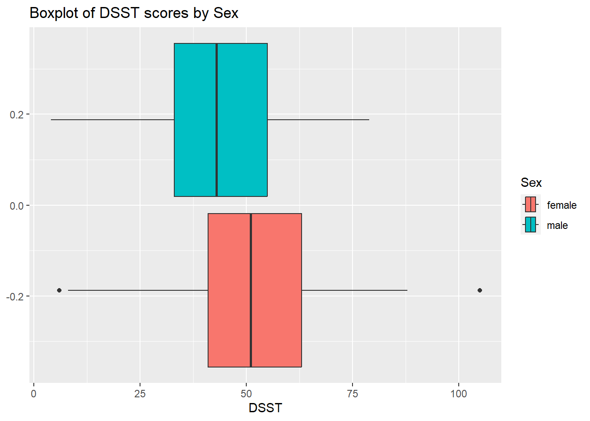
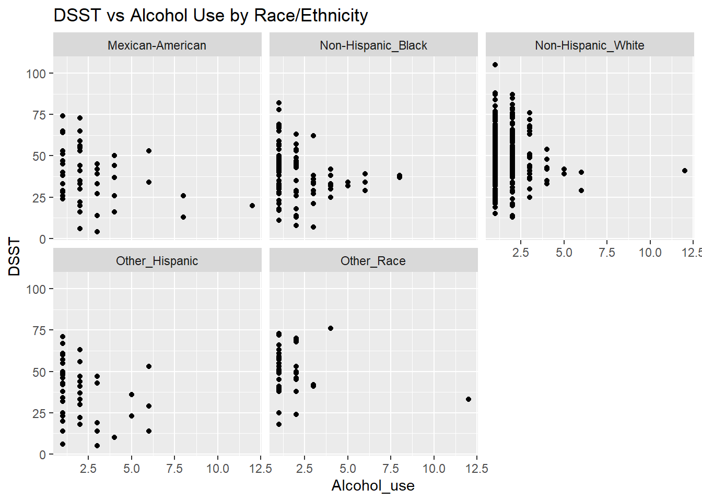
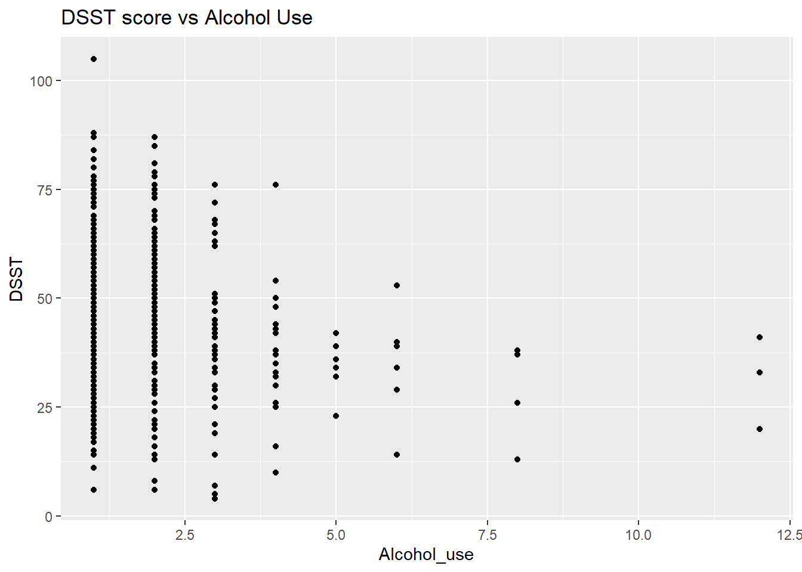
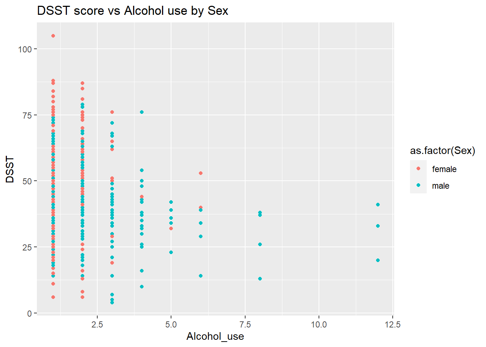

The United States population is aging, so it is imperative to understand how previously shown research findings are generalized to the older adult population. Previous research has shown that there is an association between alcohol and cognitive decline among older adults. (Mende 2019) The goal of this study is to determine whether this association differs across sex in this population. The intended audience for this study is healthcare providers for older adults, to better inform them of the relationship between alcohol, cognition, and sex so they can give the best personalized care possible.
Methods
The study population in this study included adults aged 65+ in the National Health and Nutrition Examination Survey (NHANES). NHANES is a cross-sectional survey taken in cycles every two years. It uses weighted examination and questionnaire data to obtain a representative comprehensive overview of the U.S. population. (“Centers for DiseaseControl and Prevention (CDC), NationalCenter for HealthStatistics (NCHS). NationalHealth and NutritionExaminationSurveyQuestionnaire. Hyattsville, MD: NationalCenter for HealthStatistics; 2022.” n.d.) This study used the 2013-2014 cycle of NHANES because that was the most recent cycle in which both cognitive functioning and alcohol use were measured. The outcome variable used was the Digit Symbol Substitution Test (DSST) score, which is a cognitive test that scores participants on a scale of 0 (worst) to 133 (best). Alcohol use was self-reported as “Average number of alcohol drinks per day in the past 12 months”.
In the first model, I performed a multiple linear regression of cognition on depression adjusting for demographic variables including age, race, sex, and education to see if my findings matched those previously found. My second model included an interaction term for depression and sex, to see if the effect of depression on cognition differs between sexes.
The data for the cognition and depression variables can be found here.
The data for the demographic variables can be found here.
Read in NHANES data
library(haven)library(tidyverse)
── Attaching core tidyverse packages ──────────────────────── tidyverse 2.0.0 ──
✔ dplyr 1.1.2 ✔ readr 2.1.4
✔ forcats 1.0.0 ✔ stringr 1.5.0
✔ ggplot2 3.4.3 ✔ tibble 3.2.1
✔ lubridate 1.9.2 ✔ tidyr 1.3.0
✔ purrr 1.0.2
── Conflicts ────────────────────────────────────────── tidyverse_conflicts() ──
✖ dplyr::filter() masks stats::filter()
✖ dplyr::lag() masks stats::lag()
ℹ Use the conflicted package (<http://conflicted.r-lib.org/>) to force all conflicts to become errors
#Combining data into single data framemerged =full_join(cog, full_join(demo, alc, by ="SEQN"), by ="SEQN")data = merged %>%select(CFDDS, ALQ130, RIAGENDR, RIDAGEYR, RIDRETH1) %>%#Only including cognition, depression, and required demographicsfilter(RIDAGEYR >=65) %>%#Only including older adults (age 65+)filter(!is.na(ALQ130), ALQ130 !=999) %>%#Deleting missing observations for alcohol usefilter(!is.na(CFDDS)) %>%#Deleting missing observations for cognitionmutate(RIAGENDR =ifelse(RIAGENDR ==1, "male", "female"),RIDRETH1 =ifelse(RIDRETH1 ==1, "Mexican-American", ifelse(RIDRETH1 ==2, "Other_Hispanic", ifelse(RIDRETH1 ==3, "Non-Hispanic_White", ifelse(RIDRETH1 ==4, "Non-Hispanic_Black", "Other_Race"))))) %>%rename("Alcohol_use"= ALQ130, "DSST"= CFDDS, "Sex"= RIAGENDR, "RaceEthnicity"= RIDRETH1, "Age"= RIDAGEYR)
Complete-case analysis
Because there was a lot of missing data, this complete-case analysis is likely introducing lots of bias into my findings. However, it is difficult to check the MAR assumption for imputation in this data, I will use the complete-case analysis to get preliminary findings.
`stat_bin()` using `bins = 30`. Pick better value with `binwidth`.

ggplot(data = data, aes(x = DSST, group = Sex, fill = Sex)) +geom_boxplot() +labs(title ="Boxplot of DSST scores by Sex")

p =ggplot(data = data, aes(x = Alcohol_use, y = DSST)) +geom_point()p +facet_wrap(vars(RaceEthnicity)) +labs(title ="DSST vs Alcohol Use by Race/Ethnicity")

DSST score, our outcome, looks normally distributed. Alcohol use is skewed right, so the majority of the older adults in this data are light/moderate alcohol drinkers with more than half of the sample having an average of less than 2.5 alcohol beverages per day.
Finally, it looks like females tend to have higher DSST scores than males.
Now let’s look at the relationship between alcohol use and cognition.
ggplot(data = data, aes(x = Alcohol_use, y = DSST)) +geom_point() +labs(title ="DSST score vs Alcohol Use")

There seems to be a general negative association between average number of alcoholic drinks/day and DSST score. Let’s see if this trend looks different across sexes.
ggplot(data = data, aes(x = Alcohol_use, y = DSST, color =as.factor(Sex))) +geom_point() +labs(title ="DSST score vs Alcohol use by Sex")

It looks like the participants with higher alcohol/day consumption tend to be male. It also looks like alcohol negatively slightly affects the cognition of males more than that of females.
Linear regression
First let’s fit the model without interaction term. ::: {.column-margin} The model can be represented by:
\[Alc_i\] is the self-reported average number of alcohol drinks/day in the past 12 months \[Sex_i\] is a factor corresponding to 1 = Male, 2 = Female \[Age_i\] is the participant’s age in years
The race variables are indicators of whether the participant was that race (1 if that race, 0 otherwise)
Note
We are assuming:\[\epsilon_i \sim \text{N}(0, \sigma^2)\]
:::
#Relevel race variable so that non-hispanic white is the reference groupdata$RaceEthnicity =factor(data$RaceEthnicity, levels =c("Non-Hispanic_white","Mexican-American","Other_Hispanic","Non-Hispanic_Black","Other_Race"))#Relevel sex variable so that males are the reference groupdata$Sex =factor(data$Sex, levels =c("female", "male"))mod_no_int =lm(DSST ~ Alcohol_use +as.factor(Sex) + Age +as.factor(RaceEthnicity), data = data)summary(mod_no_int)
Call:
lm(formula = DSST ~ Alcohol_use + as.factor(Sex) + Age + as.factor(RaceEthnicity),
data = data)
Residuals:
Min 1Q Median 3Q Max
-36.540 -8.736 -0.319 8.822 36.261
Coefficients:
Estimate Std. Error t value Pr(>|t|)
(Intercept) 97.3133 15.2225 6.393 8.98e-10
Alcohol_use -2.1899 0.5861 -3.736 0.000235
as.factor(Sex)male -3.0401 2.0304 -1.497 0.135694
Age -0.7486 0.2148 -3.485 0.000590
as.factor(RaceEthnicity)Other_Hispanic -1.6761 3.0925 -0.542 0.588346
as.factor(RaceEthnicity)Non-Hispanic_Black 0.7737 2.5816 0.300 0.764682
as.factor(RaceEthnicity)Other_Race 12.1960 3.0582 3.988 8.96e-05
(Intercept) ***
Alcohol_use ***
as.factor(Sex)male
Age ***
as.factor(RaceEthnicity)Other_Hispanic
as.factor(RaceEthnicity)Non-Hispanic_Black
as.factor(RaceEthnicity)Other_Race ***
---
Signif. codes: 0 '***' 0.001 '**' 0.01 '*' 0.05 '.' 0.1 ' ' 1
Residual standard error: 14.73 on 230 degrees of freedom
(357 observations deleted due to missingness)
Multiple R-squared: 0.2026, Adjusted R-squared: 0.1817
F-statistic: 9.737 on 6 and 230 DF, p-value: 1.479e-09
mod_int =lm(DSST ~ Alcohol_use*as.factor(Sex) + Age +as.factor(RaceEthnicity), data = data)summary(mod_int)
Call:
lm(formula = DSST ~ Alcohol_use * as.factor(Sex) + Age + as.factor(RaceEthnicity),
data = data)
Residuals:
Min 1Q Median 3Q Max
-36.761 -8.499 -0.101 8.712 35.989
Coefficients:
Estimate Std. Error t value Pr(>|t|)
(Intercept) 98.5270 15.7153 6.269 1.78e-09
Alcohol_use -2.6358 1.5100 -1.746 0.082227
as.factor(Sex)male -3.9382 3.4629 -1.137 0.256618
Age -0.7545 0.2160 -3.493 0.000574
as.factor(RaceEthnicity)Other_Hispanic -1.8257 3.1335 -0.583 0.560701
as.factor(RaceEthnicity)Non-Hispanic_Black 0.6702 2.6067 0.257 0.797340
as.factor(RaceEthnicity)Other_Race 12.0936 3.0808 3.926 0.000115
Alcohol_use:as.factor(Sex)male 0.5196 1.6213 0.321 0.748881
(Intercept) ***
Alcohol_use .
as.factor(Sex)male
Age ***
as.factor(RaceEthnicity)Other_Hispanic
as.factor(RaceEthnicity)Non-Hispanic_Black
as.factor(RaceEthnicity)Other_Race ***
Alcohol_use:as.factor(Sex)male
---
Signif. codes: 0 '***' 0.001 '**' 0.01 '*' 0.05 '.' 0.1 ' ' 1
Residual standard error: 14.76 on 229 degrees of freedom
(357 observations deleted due to missingness)
Multiple R-squared: 0.2029, Adjusted R-squared: 0.1785
F-statistic: 8.328 on 7 and 229 DF, p-value: 4.678e-09
In the model without interaction, alcohol had a significant negative effect on cognition. Specifically, an increase in an average of 1 alcohol drink/day was significantly associated with an estimated average decrease in DSST score by 1.82 points (p < 0.001), adjusting for age, sex, and race.
In the model with an interaction between alcohol and sex, there was no significant interaction between alcohol consumption and sex, meaning the effect of alcohol use on cognition is not modified by sex, adjusting for age and race.
Conclusion/Summary
In a complete-case analysis of 594 older adults from NHANES cycle 2001-2002, I found that there is a significant effect of alcohol-use on cognition. However, I found that this association is not modified by sex. These results may be biased due to the deletion of missing observations, since it is possible that those with missing data for alcohol-use were likely to drink more than those with observed values. It is also possible that those with missing DSST scores were likely to do worse on the DSST, or have higher alcohol consumption than those with observed values. Finally, the survey weighting for NHANES was not used in this analysis for simplicity purposes of the analysis, as well as the consequence of a complete-case analysis. These results are meant to serve as preliminary findings for the lack of effect modification between sex and alcohol use to predict cognition among older adults.
Functions used
dplyr::select
dplyr::merge
dplyr::filter
dplyr::full_join
dplyr::mutate
ggplot::geom_point
ggplot::geom_histogram
ggplot::geom_boxplot
ggplot::facet_wrap
References
“Centers for DiseaseControl and Prevention (CDC), NationalCenter for HealthStatistics (NCHS). NationalHealth and NutritionExaminationSurveyQuestionnaire. Hyattsville, MD: NationalCenter for HealthStatistics; 2022.” n.d.
Mende, Melinda Alicia. 2019. “Alcohol in the AgingBrain – TheInterplayBetweenAlcoholConsumption, CognitiveDecline and the CardiovascularSystem.”Frontiers in Neuroscience 13 (July): 713. https://doi.org/10.3389/fnins.2019.00713.